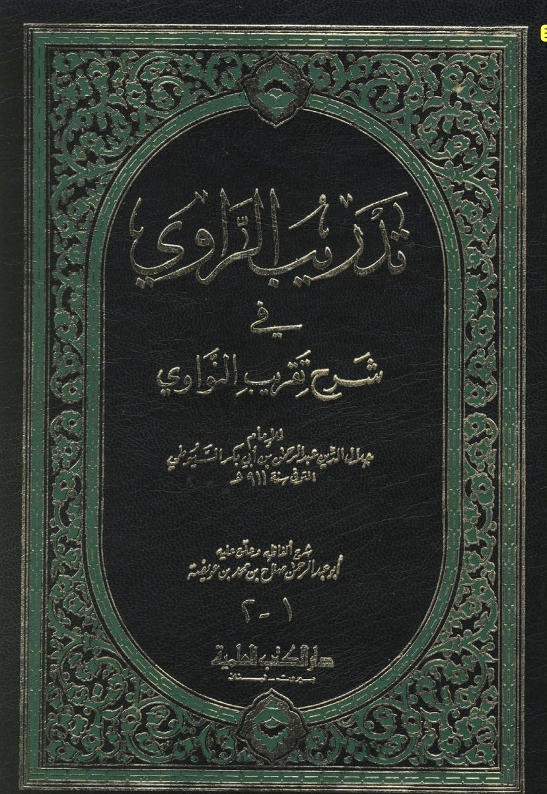

Notable Shia scholar Muhammed Asif Mohseni in his book Mashira’t Bihar Al-Anwar volume 2 pages 83 and 84
he states in the chapter about the virtues of Ameer Al-Mumineen (Ali) that there are no asaned which are
mu’tabar (reliable) about his birth in the bayt Allah (kaabah) but its a well-known held belief among the shias
Jalal Al-Deen Al-Suyuti quotes Sheikh Al-Islam weakening that which has been narrated in Al-Mustadrak by
Al-Hakim about ‘Ali being born in the Ka’bah, Tadreeb Al-Rawi, page 204
